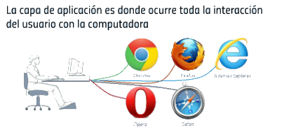
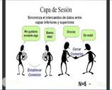
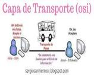
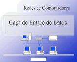

|  |
Capa de aplicacion (Capa 7):La capa 7 es la capa con la que está familiarizada la mayoría de la gente, porque es la que se comunica directamente con el usuario. Una aplicación que se ejecuta en un dispositivo puede comunicarse con otras capas OSI, pero la interfaz se ejecuta en la capa 7. Por ejemplo, un cliente de correo electrónico que transfiere mensajes entre un cliente y un servidor se ejecuta en la capa 7. Cuando se recibe un mensaje en el software del cliente, la capa de aplicación es lo que lo presenta al usuario. Los protocolos de aplicación incluyen el SMTP (Simple Mail Transfer Protocol) y el HTTP, que es el protocolo para la comunicación entre navegadores y servidores web. |
|
Capa de Presentacion (Capa 6): Mencionamos que la capa de aplicación muestra información a los usuarios, pero la capa de presentación del modelo OSI es la que prepara los datos para que estos puedan mostrarse al usuario. Es muy común que dos aplicaciones diferentes usen la codificación. Por ejemplo, comunicarse con un servidor web sobre HTTPS que usa información cifrada. La capa de presentación es la responsable de la codificación y descodificación de la información, de modo de que puede mostrarse en texto simple. La capa de presentación también es responsable de la compresión y descompresión de los datos, a medida que estos viajan de un dispositivo a otro. |
|  |
Capa de Sesion (Capa 5): Para comunicarse entre dos dispositivos, una aplicación debe antes crear una sesión. Una sesión es única para el usuario y lo identifica en el servidor remoto. La sesión debe abrirse durante el tiempo suficiente como para que los datos se transfieran, pero debe cerrarse después de la transferencia. Cuando se transfieren grandes volúmenes de datos, la sesión es la que se encarga de garantizar que el archivo se transfiera en su totalidad, y de que la retransmisión se restablezca si los datos están incompletos. Por ejemplo, si se transfieren 10 MB de datos y solo se completan 5 MB, la capa de sesión se asegura de que solo se retransfieran 5 MB. Esta transferencia hace que la comunicación sobre una red sea más eficiente, en vez de desperdiciar recursos y transferir el archivo entero de nuevo. |
|  |
Capa de Transporte:La capa de transporte se encarga de tomar los datos y dividirlos en partes más pequeñas. Cuando se transfieren datos en una red, no se transfieren en un paquete único. Para hacer las transferencias más eficientes y rápidas, la capa de transporte divide los datos en segmentos más pequeños. Estos segmentos más pequeños contienen información de encabezado que se pueden volver a ensamblar en el dispositivo objetivo. Los datos segmentados también cuentan con control de errores para informar a la capa de transporte que restablezca la conexión si los paquetes no se transfieren totalmente al destinatario objetivo. |
|
Capa de Red (Capa 3): La capa de red es la que se encarga de dividir los datos en el dispositivo del remitente y de recomponerlos en el dispositivo del destinatario cuando la transmisión ocurre entre dos redes diferentes. Al comunicarse dentro de la misma red, la capa de red es innecesaria, pero la mayoría de los usuarios se conectan a otras redes, como las redes basadas en la nube. Cuando los datos viajan a través de diferentes redes, la capa de red es la responsable de crear pequeños paquetes de datos que se redirigen a sus destinos y después se reconstruyen en el dispositivo del destinatario. |
|  |
Capa Enlace de datos (Capa 2): La capa de red posibilita la comunicación entre diferentes redes, pero la capa de enlace de datos es la responsable de la transferencia de información en la misma red. El enlace de datos convierte los paquetes recibidos en la capa de red en marcos. Al igual que la capa de red, la capa de enlace de datos es la responsable del control de los errores y el flujo de datos para garantizar una correcta transmisión. |
 |
Capa Fisica (Capa 1): Tal como su nombre sugiere, la capa física es la responsable de los equipos físicos y la que posibilita la transferencia de datos, como cables y routers instalados en la red. Esta capa es uno de los aspectos en la transmisión de red en donde los estándares son fundamentales. Sin estándares, la transmisión entre dispositivos de diversos fabricantes es imposible.
|